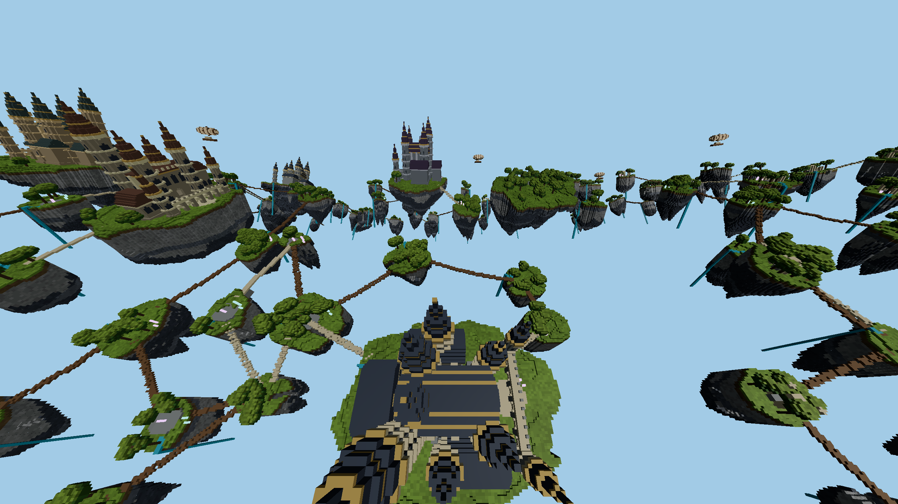

FIREFOX · AETHER ARCHIPELAGO · 29 OCTOBER 2026
Exact picking,
less repeated discovery.
Moving picking CPU time changes from 0.617 to 0.485 ms (-21.5%). Whole-frame CPU changes from 4.14 to 3.96 ms; FPS from 93.4 to 96.0 (+2.8%). FPS block ranges overlap, so this session supports lower picking CPU cost, not a stable FPS gain. These are paired measurements on this machine, not a cross-device guarantee.
What changed
The inverse-bent ray still takes every original sample and intersects the same exposed triangles. Adjacent samples cover overlapping 3 × 3 × 3 neighborhoods. Skip a neighborhood when its center has not changed, skip cells covered by the immediately previous neighborhood, and remember empty cells as already classified. Preserve first-visit ordering so coplanar tie handling is unchanged. Periodic seam jumps conservatively reduce reuse rather than guessing continuity.
The completed previous optimization is saved in commit b8e07bc. Both variants here retain its cache, demand-priority two-worker schedule, command reuse, seam shader and incremental far uploads. Only aimRaycastDiscoveryOptimized changes. No ray throttling, reduced reach, coarse replacement, or image-quality reduction is used.
Same-page reference / optimized / optimized / reference
Native Firefox, actual 2560 × 1440, no MSAA, 100° vertical FOV and 55° downward pitch, eight fixed 1 m source zones, 8-chunk near radius and 576-chunk far radius. Each view runs ABBA, with 6 seconds settling and 12 seconds sampled per block after 60 seconds initial warmup. Moving x/z amplitudes are 64/32 m on a six-second route. CPU and GPU overlap; picking time is included in CPU. The stationary view is close to a 120 Hz presentation ceiling. One session is not a confidence interval.
Correctness
400 hit-and-read-order comparisons cover JS/WASM kernels, flat/torus projection, camera-local correction, standard/micro voxels, edges, periodic seams and height limits. Another 64 moving/diagonal empty-space rays retain the exact read order with less repeated classification. Existing cache invalidation, edit publication and tool-interaction regressions also pass; see the validation record.
The browser's settled reference and optimized picking queries agree. After streaming and ownership fades settle, map-upload and near-command reference captures differ at zero of 3,686,400 RGBA pixels. These checks do not establish equivalence at every possible camera; the algorithm's unchanged discovery set and regression comparisons provide the broader correctness argument.

Evidence
Summary · Validation · Source hashes · Raw frames · Reproduction